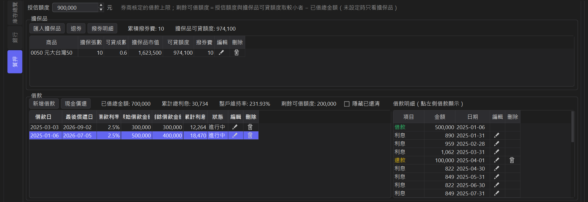
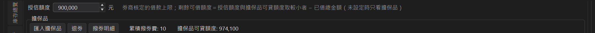
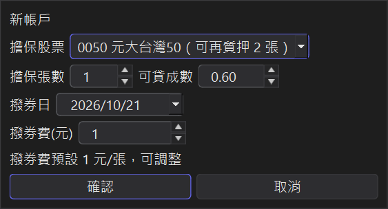
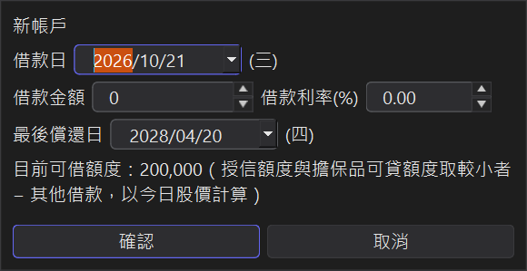
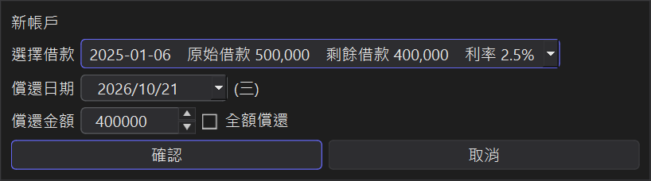
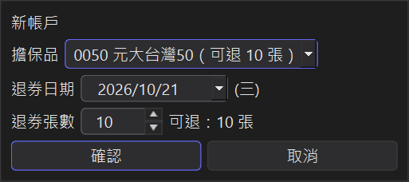
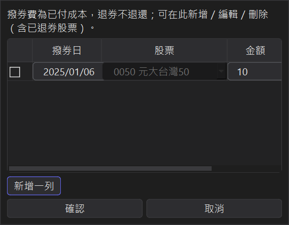

股票質押記帳
把手上的股票拿去券商質押借錢，需要追蹤的東西很多：哪些股票撥券了、借了多少、利息多少、維持率還夠不夠。
StockKeeper 的「質押」功能把擔保品、借款、還款、利息、撥券費集中在同一個地方記錄，
並自動計算整戶維持率與剩餘可借額度。
1、開啟質押分頁
每個台股帳戶左側都有「質押」分頁，最上方是授信額度，下面分成擔保品與借款兩個區塊。 點選某一筆借款，右側會顯示這筆借款的借款明細（撥款、逐月利息、還款）。

● 質押為台股專屬功能，美股帳戶不會顯示這個分頁。
2、設定授信額度
向券商申請股票質押（不限用途款項借貸）時，券商會核定一個授信額度。 這是借款的上限 ── 就算匯入再多擔保品，借款總額也不會超過這個額度。
在質押分頁最上方的「授信額度」欄位輸入券商核定的金額即可，輸入後按 Enter 或離開欄位就會自動儲存。 沒有填寫時顯示「未設定」，剩餘可借額度只會依擔保品計算。

3、匯入擔保品（撥券）
點「匯入擔保品」，選擇要撥券的股票並填入：
● 擔保張數：上限會自動設為這檔股票還能質押的張數。
● 可貸成數：依券商規定，例如 0.6。
● 撥券日、撥券費：撥券費預設 1 元/張，可以自行調整。

擔保品表會顯示每檔的擔保品市值與可貸額度（市值 × 可貸成數）， 區塊上方的摘要則顯示全部擔保品加總的「擔保品可貸額度」；總表的庫存也會標記「質押 N 張」。
4、新增借款
點「新增借款」，填入借款日、借款金額、借款利率與最後償還日（預設為借款日的一年半後）。
視窗會顯示「目前可借額度」＝ 授信額度與擔保品可貸額度取較小者 − 其他借款。 借款金額超過時會提醒，確認後仍可以繼續（例如當初借款時股價較高）。

5、利息自動逐月計算
借款利息依剩餘本金 × 年利率 ÷ 365 × 天數逐月計算，顯示在借款明細中。 如果和券商實際扣的利息有出入，可以點利息那一列的編輯，手動覆寫該月的實際金額。
6、現金償還
點「現金償還」，選擇要償還的借款、償還日期與金額，也可以勾選「全額償還」。 先在借款表點選一筆借款再按「現金償還」，視窗會自動選好那一筆。

借款表會分別顯示原始借款金額與剩餘借款金額；還清後狀態會變成「已還清」， 可以勾選「隱藏已還清」只看進行中的借款。
7、退券
點「退券」，選擇股票與退券張數，退回的張數就能正常賣出。 退券後如果擔保品可貸額度低於已借總金額，程式會先提醒。

8、撥券明細
撥券費屬於已付出的成本，退券時不會退還。點「撥券明細」可以查看、新增、編輯或刪除每一次撥券的紀錄， 撥券費為 0 元的撥券也會記錄。

9、維持率與可借額度怎麼算？
借款不需要逐筆綁定擔保品，而是由整戶擔保品一起支撐所有借款：
● 整戶維持率 ＝ 擔保品市值合計 ÷ 已借總金額 × 100%
● 擔保品可貸額度 ＝ Σ（擔保品市值 × 可貸成數）
● 剩餘可借額度 ＝ 授信額度與擔保品可貸額度取較小者 − 已借總金額（未設定授信額度時只看擔保品）
擔保品可貸額度會隨股價每天變動，授信額度則是固定的： 股價高時，可借金額由授信額度決定；股價跌時，則由擔保品決定。
小提醒：券商 App 通常以前一個交易日的收盤價計算維持率， StockKeeper 則以最新收盤價計算，同一天兩邊的數字可能略有不同。
10、質押成本納入損益與報酬率
在「各項計算設定」勾選「成本及損益納入質押利息與撥券費」（預設勾選）， 質押的利息與撥券費就會計入帳戶的總成本、總損益與年化報酬率，帳戶摘要也會顯示「累計質押成本」。